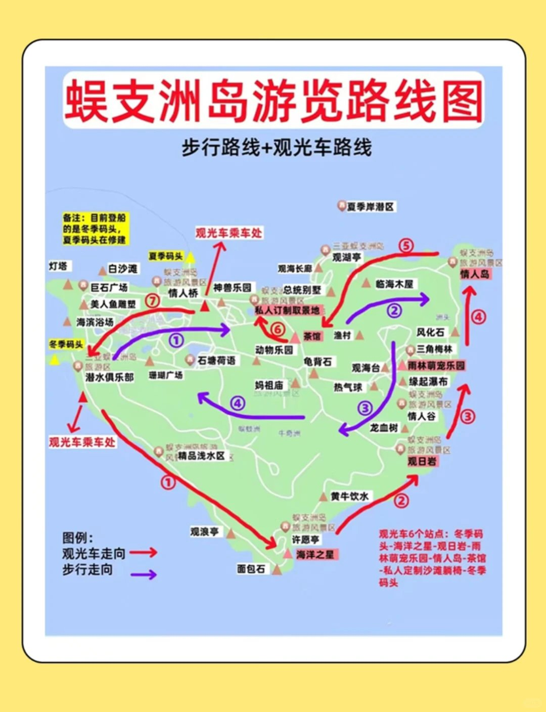
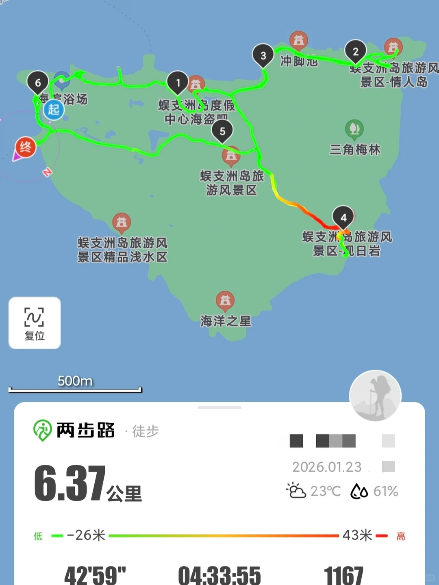
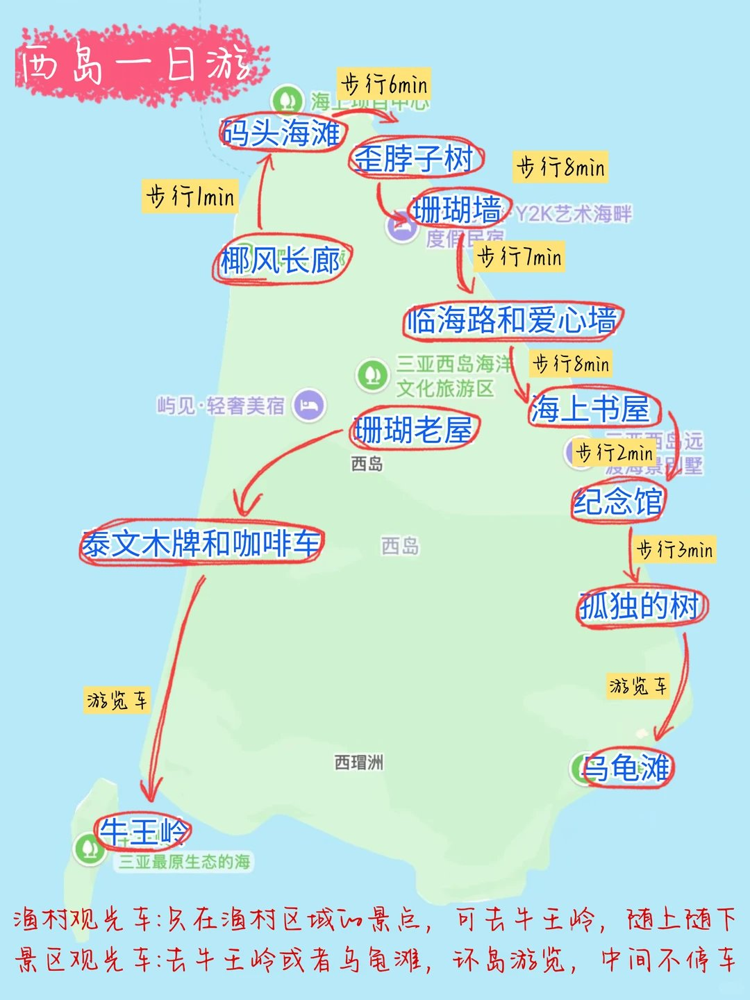

六月关键词
高温、高湿、强紫外线，午后可能雷阵雨。把户外强度集中在 10:30 前和 16:00 后。
 self-reward
self-reward
2026.06.02 晚到三亚 / 6.6 中午转海口 / 6.7 17:15 回合肥
三亚住椰梦长廊 3 晚：6/3 蜈支洲岛（果冻海+水上项目）→ 6/4 亚龙湾+太阳湾+鹿回头 → 6/5 西岛渔村+椰梦长廊日落；6/6 上午三亚湾/天涯小镇，中午高铁去海口，6/7 17:15 回合肥。香化放海口日月广场最划算。
高温、高湿、强紫外线，午后可能雷阵雨。把户外强度集中在 10:30 前和 16:00 后。
三亚住椰梦长廊：离海近、看日落方便、去三亚站不绕。三晚固定不换住处，每天傍晚回来都能赶上橘子海。
6 月 6 日中午三亚站→海口东站高铁（约 1.5h）；免税香化放海口日月广场最划算，三亚只顺路逛海棠湾 cdf。
Map Logic
6/3 蜈支洲岛 → 6/4 亚龙湾 → 6/5 西岛 → 6/6 中午海口。三晚住椰梦长廊，每天傍晚可回来看橘子海。

assets/sanya-3day-route.jpg 后会自动显示。
assets/sanya-overview-map.jpg 后会自动显示。凤凰机场 → 椰梦长廊酒店入住。三晚不换，每天傍晚可回来看日落。
三亚海景天花板！8:00 第一班上岛，水上项目或环岛观光，16:00 下岛回椰梦长廊赶日落（约 17:00 到）。
太阳湾公路 → 亚龙湾海滩 → 鹿回头（傍晚上去俯瞰三亚）。大东海小东海不用特地去。
文艺渔村小岛，玻璃海+网红打卡点。下午回椰梦长廊看最后一场橘子海日落。
上午三亚湾散步+天涯小镇拍照，中午高铁去海口，下午骑楼老街→云洞图书馆→夜市。
离海近、日落方便、去三亚站不绕。每天傍晚回来都能看橘子海，6/3 蜈支洲回来也来得及。
三亚海水天花板（果冻海），水上项目最全。门票 144 元，学生 72 元，套票 1399-1880 元。
比蜈支洲便宜（门票 90 元）、渔村烟火气浓，玻璃海+网红打卡。大晴天登岛超美。
沙滩不如亚龙湾，礁石滩不能游泳。半山半岛帆船港顺路拍照 15min 即可，不必专门安排时间。
合肥出发，晚到凤凰机场，打车 20min 到椰梦长廊入住。
⏱ 无游玩安排 | 🍜 清补凉或粉汤轻食
8:00 第一班上岛，玩水上项目或环岛观光。16:00 下岛→打车 1h 回椰梦长廊≈17:00，正好赶橘子海日落。
⏱ 岛上 6-8h | 🌅 17:00 前回到椰梦长廊 | 💡 后海村不用去
🌅 可选早起去太阳湾看日出（6:00）→ 太阳湾公路+海滩（2-3h）→ 鹿回头傍晚看日落（1.5h）。大东海小东海跳过。
⏱ 太阳湾 2-3h | 鹿回头 1.5h | 🌧️ 雨天换亚特兰蒂斯/千古情/免税店
西岛门票 90 元，文艺渔村+玻璃海+网红打卡点。下午回来，椰梦长廊 16:00 后去，导航"凤凰岛桥头公园"或"美丽新海岸公交站"看最美橘子海。
⏱ 西岛 4-6h | 椰梦长廊 1h | ⚠️ 小心沙滩蚊虫
上午三亚湾散步拍照 + 天涯小镇（2h，白墙蓝窗）。中午吃完午饭三亚站→海口东站高铁。下午骑楼老街→云洞图书馆→海大南门夜市。
⏱ 天涯小镇 2h | 高铁 1.5h | 海口下午 3 点起逛 | ⚠️ 三亚湾朝西看不到日出
自然醒，日月广场免税（香化主战场，1.5-2h）或市区早午餐。中午退房，15:00 前到美兰机场。
⏱ 免税 1.5-2h | 🍜 海口最后一顿：椰子鸡/辣汤饭/海南粉
Wuzhizhou Island
人称"中国马尔代夫"，三亚海水最蓝的地方，也是水上项目最全的岛。6/3 全天安排，8:00 前到码头，16:00 前下岛回椰梦长廊日落。



| 📍 位置 | 海棠湾，椰梦长廊打车约 1h（80-120 元），或公交 28/33 路 |
| 🎫 门票 | 成人 133-144 元（含往返船票），学生票 72 元 |
| 🕗 时间 | 8:00-18:30，16:00 停止上岛，末班船约 17:30 |
| 🚌 游览车 | 138 元/人（6 站随意上下，推荐） | 60 元/人（全程不下车，不太推荐） |
| ⏱ 建议时长 | 6-8 小时（含往返船程 40min+水上项目+环岛），一天刚好 |
⚠️ 以下价格为 2025-2026 网络搜集参考，非官方实时报价，实际可能有浮动。
| 极限玩家套票 | ¥1,880/人 | 24h 无限次，含潜水/摩托艇/拖伞/飞艇/海底漫步等 15+ 项目 |
| 海岛玩家套票 | ¥1,399/人 | 含潜水/拖伞/飞艇等 20+ 项目，比单买省 40% |
| 258 元套票 | ¥258/人 | 门票+船票+环岛电瓶车，纯观光不玩水 |
| 彩虹拖伞 | ¥350 | 双人可蜻蜓点水，俯瞰果冻海 |
| 珊瑚礁潜水 | ¥500-600 | 约 30min，教练一带一 |
| 堡礁潜水 | ¥380 | 入门级，适合第一次潜水 |
| 摩托艇 | ¥200-500 | 按时间/排量不同 |
| 大小飞鱼 | ¥200 | 快艇牵引飞椅，刺激尖叫 |
West Island
海南第二大原住民海岛，比蜈支洲安静便宜，有渔村烟火气、玻璃海、牛王岭原始海景。6/5 全天安排，门票 ¥90（含往返船票）。


⚠️ 以上为参考价格，实际以岛上当日公示为准。西岛项目比蜈支洲便宜 30-50%，如果不差钱蜈支洲体验更好，如果追求性价比西岛更划算。
| 8:20-8:50 | 🚤 肖旗港码头乘船上岛（船程15min，票价 ¥90含往返） |
| 9:00-11:30 | 🛵 租电动车逛渔村文艺线：珊瑚墙→Xiuu咖啡大相框→百年珊瑚老屋→海上书房→渔村码头→爱心墙→三角梅隧道 |
| 11:30-12:30 | 🍜 渔村午餐：网红虾饼 ¥10、糟粕醋火锅人均 ¥60-80、清补凉 ¥15 |
| 12:30-14:30 | 🦌 牛王岭（观光车¥35）+ 赶海（退潮时）。山顶俯瞰+礁石区捡海鲜 |
| 14:30-15:00 | 🚤 下岛返回肖旗港，打车回椰梦长廊酒店休息 |
| 16:30-19:00 | 🌅 椰梦长廊最后一场日落（穿浅色裙子拍逆光剪影） |
Activities
蜈支洲岛只是冰山一角。三亚几乎每个海湾/海岛都有自己的水上项目体系，价格和体验差异很大。
| 1 公里体验 | ¥199-298 | 约 1-2 分钟，尝鲜拍照 |
| 3 公里海景 | ¥398 | 约 3 分钟，飞猪有时 ¥124 特价 |
| 5-6 公里海岸线 | ¥498-598 | 约 5-6 分钟 |
| 10 公里全景 | ¥980 | 约 10 分钟，俯瞰海岸线 |
| 15 公里深度 | ¥960-1,280 | R44 直升机，约 15 分钟，2 人起飞 |
💡 傍晚时段光线最柔和，可邂逅海上日落。穿纯色衣裙更出片。凤凰岛基地位于三亚湾，你们住椰梦长廊去很方便。
| 拼船（3小时） | ¥180-400/人 | 大众点评好评商家 ¥214/人，含海钓+摩托艇 |
| 包船（3小时） | ¥1,200 起 | 58尺飞桥游艇，含船长水手+饮料+渔具+航拍 |
📍 码头：三亚游艇旅游中心（鸿洲码头）/ 半山半岛帆船港。上午 9-12 点时段最佳（蓝天白云出片）。
Compare
三亚海棠湾 cdf 胜在面积大、品牌全、体验好，但香化价格不如海口有优势。你们的行程正好 6/5 蜈支洲岛回程顺路逛一下海棠湾 cdf（看看不买也没损失），主要香化购物留到 6/7 上午海口日月广场。
以下时长基于真实攻略和游客反馈整理，已含交通/排队时间。六月高温，下午避开户外。
Plan B
对面就是蜈支洲岛，沙滩开阔。6/3 如果住海棠湾附近可看，但你们住椰梦长廊需要提前 1h 出发。
.jpg?width=400)
6/4 早上最佳！太阳湾公路尽头沙滩，朝东正对日出。6 月日出约 6:00，提前 5:30 到。看完直接开始太阳湾公路+亚龙湾行程，无缝衔接。
6/4 如果早上起不来，鹿回头傍晚去也一样美（这个你们已经安排了）。

三亚最经典的日落观景点，全长 20km。导航"凤凰岛桥头公园"或"美丽新海岸公交站"，这两个位置视野最开阔。下午 4 点后到，等 18:50 左右的橘子海。你们住椰梦长廊，每天傍晚都能来。
.jpg?width=400)
俯瞰三亚湾全景日落，高处视角无敌。6/4 傍晚你们已经安排了。免费但需公众号预约。
凤凰岛桥拍日落，建筑剪影做前景，层次感强。6/6 上午散步可顺路看看（但早上看不到日落）。
六月的海不是每天都能看。午后雷阵雨常见，但通常下 1-2 小时就停。以下是非海边/室内备选，不耽误玩。
Beach Mood
把热的时间留给泳池、空调和午睡，把好看的时间留给海边。
椰梦长廊离海近、日落好、价格友好，三晚固定不换。每天傍晚都能回来看橘子海。
精力最好时冲最好的海。玩完回来刚好傍晚，椰梦长廊日落无缝衔接。
太阳湾最美沿海公路 → 亚龙湾海滩 → 鹿回头日落。大东海小东海跳过，帆船港顺路拍照。
最后一天慢节奏：文艺渔村、玻璃海、网红打卡，回来再看一场椰梦长廊日落。
Haikou Quick Tour
海口的海不如三亚蓝，不必专门跑海滩。精华全在世纪大桥两岸——骑楼老街、云洞图书馆、天空之山、万绿园都在 5km 范围内，打车/骑行半天就能逛完。

700 年南洋风情街区，600 余栋骑楼建筑，免费 24h 开放。钟楼就在街对面，是海口标志。上午光线好，阳光洒在骑楼上很有电影感。

高晓松设计，建筑像云朵漂浮海上。拍照超出片！旋转书梯、空中走廊、靠窗阅读区都是神仙机位。穿白/米/浅蓝色衣服更搭。需在公众号提前预约，傍晚 17:00-19:00 光线最佳。

云洞图书馆对岸就是天空之山驿站，世纪大桥连接两端。傍晚看大桥亮灯和日落，海口湾沿岸骑行非常舒服，FUNBAY 自在湾有很多咖啡轻食。
超大椰林草坪免费公园，适合骑车/散步。世纪公园有湖景和草坪，就在云洞旁边。这两个都是海口人的日常休闲地，节奏很慢。
上午三亚湾散步+天涯小镇拍照 → 中午三亚站高铁 → 下午 2-3 点到海口东站 → 打车 10min 到 骑楼老街（逛 1.5h+钟楼）→ 打车 8min 到 云洞图书馆（拍照等日落，需提前预约，万绿园可跳过赶时间）→ 傍晚 世纪大桥亮灯 → 打车 10min 到 海大南门夜市
Route
6/2 晚到三亚 → 6/3 蜈支洲岛 → 6/4 亚龙湾+鹿回头 → 6/5 西岛+椰梦长廊 → 6/6 三亚湾/天涯小镇+中午高铁海口 → 6/7 海口日月广场免税+17:15回合肥。
Schedule
以下为每日详细安排，含时间节点、项目费用参考、拍照打卡点和备选方案。
| 住宿（三亚3晚+海口1晚） | ¥1,000-3,000 |
| 门票+项目（蜈支洲+西岛+鹿回头） | ¥400-2,100 |
| 餐饮（5天） | ¥500-800 |
| 交通（打车+高铁） | ¥350-600 |
| 合计 | ¥2,250-6,500 |
⚠️ 以上为粗略估计，实际价格波动大，以预订时为准。不含往返合肥机票和高铁。
Schedule
以下为每日详细安排，含时间节点、项目费用参考、拍照打卡点和雨天备选方案。
| 住宿（三亚3晚+海口1晚） | ¥1,000-3,000 |
| 门票+项目（蜈支洲+西岛+鹿回头） | ¥390-2,100 |
| 餐饮（5天） | ¥490-850 |
| 交通（打车+高铁） | ¥350-600 |
| 合计 | ¥2,230-6,550 |
⚠️ 以上为粗略估计，实际价格波动大，以预订时为准。不含往返合肥机票。
Choices

6/3 蜈支洲冲锋式玩水，6/5 西岛慢逛渔村拍照。一个刺激一个文艺，节奏互补不重复。3.5 天排 3 个核心景点，不空不赶。

世纪大桥两岸 5km 内搞定，半天够用。日月广场香化最划算，6/7 上午买完直接去机场。

南山 108m 观音震撼但占半天，天涯海角两块石头，大小洞天又远又一般，后海村只有冲浪。舍弃不后悔，保留两个岛更值。
Food
海鲜留给三亚，市井小吃留给海口。这样既满足“海边吃海鲜”，也不会每天都被大餐拖累。
💡 海口菜偏咸鲜口，口味清淡的可以提前跟老板说少放盐。骑楼老街周末人多建议工作日去。
Budget
Prep
六月海南的体验差距，往往不在景点，而在有没有把太阳、潮汐和转场安排好。
SPF50+ PA++++ 防晒霜、遮阳帽、墨镜、防晒衣、冰袖、晒后修复；下水后 80 分钟补涂。
泳衣适合海边拍照和泳池，外搭长袖防晒衫更实用；带防水手机袋和替换干衣。
只在低潮前后去，穿涉水鞋，不徒手碰水母和不认识的海洋生物；"抓水母"改成观察拍照更安全。
游泳：亚龙湾公共海滩（免费、水清沙细、有救生员）、蜈支洲岛指定游泳区、西岛游泳区。三亚湾/椰梦长廊可踩水但不建议游远（水质一般、浪大时危险）。抓海鲜：西岛牛王岭退潮后礁石区可捡海螺/螃蟹；蜈支洲岛码头附近退潮有海胆；记得带手套+小桶，只抓认识的。
海口湾傍晚骑行更舒服；三亚电动车只建议短距离，避开中午和不熟悉的快车道。
Notes
朋友可以先把想法写在这里，内容会保存在自己的浏览器里。想真正发给你，就用右侧按钮提交到 GitHub Issue。
本地自动保存，不会公开显示给其他人。
References
出发前 24-48 小时复核天气、航班、动车、景区预约和潮汐。小红书公开内容常有登录限制，页面保留站内搜索入口，便于你临行前看最新笔记。